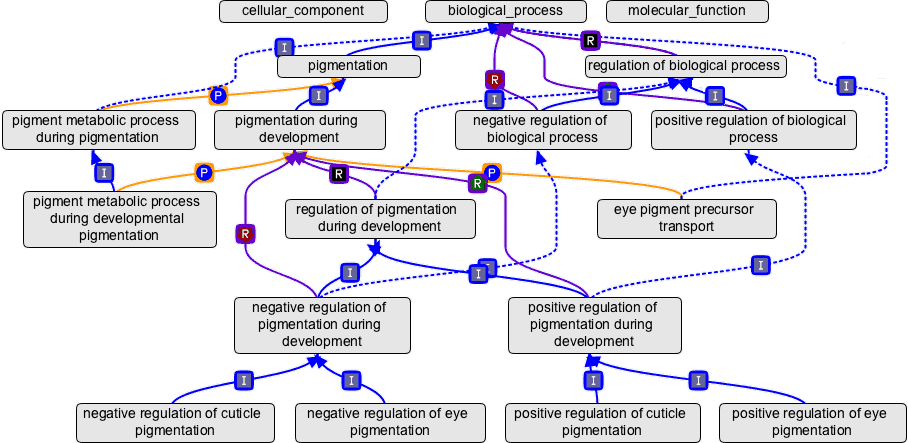

Functional Genomics
David Montaner
www.dmontaner.com
From Genes to Phenotype


Annotation Data Bases - Gene Ontology

Experimental Data: Microarrays & NGS

thousands or millions of genomic variables

Gene Expression Analysis
Clustering
Class prediction
Hypothesis testing

Gene Set Analysis

Shift in the observation unit
- \(H_0: gene_i\) is not differentially expressed …
- \(H_0: gene\ set_j\) is not enriched …
- more interpretable for researchers
- greater power (sample size )
- smaller p-value adjustment:
20,000 genes -> 2,000 GO terms
Takes advantage of the mildly differentially expressed genes
GSEA

Drawbacks
- Confidence level based on a sample permutation test.
Computationally intensive. - Completely dependent of the gene level statistic.
Not very flexible: weighting, covariates, … - Tackles just a single genomic dimension
Genomic dimensions
- Gene expression
- Transcript expression
- Splicing
- microRNA activity
- Promoters
- Methylation
- SNV (genetic variation)
- Copy Number
- Loss of heterozygosity (LOH)
Logistic Regression Model
\[ \log \frac{P(g_i \in GO)}{P (g_i \notin GO)} = \kappa + \alpha \ r_i \]
We model the probability of a gene belonging to a GO term
as a function of its score
in the differential expression analysis
\[ \log \frac{P(g_i \in GO)}{P (g_i \notin GO)} = \kappa + \alpha \ r_i \]
\begin{align} &\alpha > 0 \rightarrow \text{enrichment is } + \\ &\alpha < 0 \rightarrow \text{enrichment is } - \\ &\alpha = 0 \rightarrow \text{no enrichment} \end{align}
Ranking index
Our proposal:
\[ r = - sign (statistic) \cdot log (pvalue) \]
makes results more comparable across different studies
(good for meta analysis)
quantiles transformation to a \(N(0,1)\)
reduces the effect of outliers
But any continuous value can be used…
Multi Dimensional Gene Set Analysis
Genomic dimensions
- Gene expression
- Transcript expression
- Splicing
- microRNA activity
- Promoters
- Methylation
- SNV (genetic variation)
- Copy Number
- Loss of heterozygosity (LOH)
Multidimensional Logistic Regression
\[ \log \frac{P(g_i \in GO)}{P (g_i \notin GO)} = \kappa + \alpha\ x_1 + \beta\ x_2 \]

Interaction
\[ \log \frac{P(g_i \in GO)}{P (g_i \notin GO)} = \kappa + \alpha\ x_1 + \beta\ x_2 + \gamma\ x_1 x_2 \]

microRNAs


mirna expression
microRNA to gene transference
\[ t_i = \sum_{j \in G_i} r_{j} \]
Related topics
And so… Summary
It was fun
… and useful
- New methodology and tools are available
- My PhD
- Supervised one more PhD and several MSc disertations
- Teaching and communication
www.dmontaner.com/#Short Bioinformatics Courses
+50 Publications (peer review)
- Integrated gene set analysis for microRNA studies. Garcia-Garcia F, Panadero J, Dopazo J, Montaner D. Bioinformatics (Oxford, England). 2016;
- Multidimensional gene set analysis of genomic data. Montaner D, Dopazo J. PloS one. 2010; 5(4):e10348.
- Gene set internal coherence in the context of functional profiling. Montaner D, Minguez P, Al-Shahrour F, Dopazo J. BMC genomics. 2009; 10:197.
- Babelomics 5.0: functional interpretation for new generations of genomic data. Alonso R, et al. Nucleic acids research. 2015; 43(W1):W117-21.
- Prophet, a web-based tool for class prediction using microarray data. Medina I, Montaner D, Tárraga J, Dopazo J. Bioinformatics (Oxford, England). 2007; 23(3):390-1.
- Next station in microarray data analysis: GEPAS. Montaner D, et al. Nucleic acids research. 2006; 34(Web Server issue):W486-91.
Software
Knowledge Transfer
First CIPF Spin-off Company
What can I add to you
- Statistics & Machine Learning
- Theory + applyed skills + statistical intuition
- Used to solve whole problems: beyond the analysis side
Team woking
Very simmilar context Risk prediction in clinic an fraud …
- Training and teaching
- Convincing and explaining
- Sharing